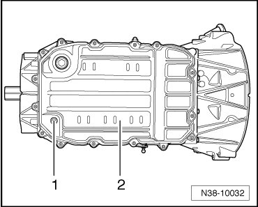
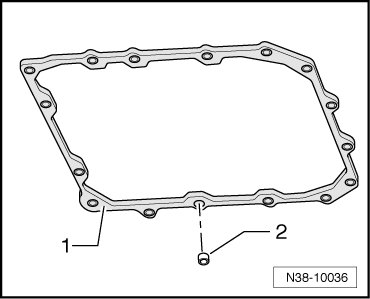
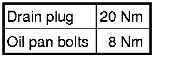

Fluid Pan: Service and Repair
Oil Pan
Special tools, testers and auxiliary items required
• Drip tray (VAG 1306)
• Torque wrench (VAG 1331)
Removing
- Remove noise insulation for transmission.
- Place drip tray (VAG 1306) underneath.
- Remove oil pan drain plug- 1 -.

- Drain Automatic Transmission Fluid (ATF).
- Loosen the oil pan bolts - 2 - in a diagonal pattern and remove oil pan.
Installing
- Clean all magnets in the depressions of the oil pan. Ensure that the magnets are in full contact with the oil pan.
- Install the oil pan with a new gasket - 1 -.

- Make sure that all spacer sleeves - 2 - are located completely in the new gasket - 1 -.
- Tighten oil pan bolts in diagonal sequence and in stages. Refer to.
Replace drain plug seal.
- Tighten oil pan drain plug.
- After installation, fill with ATF, check ATF level, and top off. Refer to --> [ ATF Level Checking and Filling ] ATF Level Checking and Filling.
Tightening Specifications
